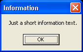

MessageRequester()
Syntax
Result = MessageRequester(Title$, Text$ [, Flags])Description
Opens a blocking requester to display some information. The program execution is totally stopped until the user close the requester.
Parameters
Title$ The title of the requester window. Text$ The text displayed in the requester window. Flags (optional) It can be one of the following value: #PB_MessageRequester_Ok : to have the 'ok' only button (Standard) #PB_MessageRequester_YesNo : to have 'yes' or 'no' buttons #PB_MessageRequester_YesNoCancel : to have 'yes', 'no' and 'cancel' buttons
Return value
It can be one of the following constants:#PB_MessageRequester_Yes : the 'yes' button was pressed #PB_MessageRequester_No : the 'no' button was pressed #PB_MessageRequester_Cancel : the 'Cancel' button was pressed
Example
; Simple MessageRequester (normally used for information purposes only) ; (result will be always the same, so we don't check it here) MessageRequester("Information", "Just a short information text.", #PB_MessageRequester_Ok) ; MessageRequester with Yes / No buttons (normally used for questions) ; (result will be shown in the following information requester) Result = MessageRequester("Title", "Please make your input:", #PB_MessageRequester_YesNo) a$ = "Result of the previously requester was: " If Result = #PB_MessageRequester_Yes ; pressed Yes button (Result = 6) a$ + "Yes" Else ; pressed No button (Result = 7) a$ + "No" EndIf MessageRequester("Information", a$, #PB_MessageRequester_Ok) ; MessageRequester with Yes / No / Cancel buttons (normally used for questions) ; (result will be shown in the following information requester) Result = MessageRequester("Title", "Please make your input:", #PB_MessageRequester_YesNoCancel) a$ = "Result of the previously requester was: " If Result = #PB_MessageRequester_Yes ; pressed Yes button a$ + "Yes" ElseIf Result = #PB_MessageRequester_No ; pressed No button a$ + "No" Else ; pressed Cancel button or Esc a$ + "Cancel" EndIf MessageRequester("Information", a$, #PB_MessageRequester_Ok)

Supported OS
All